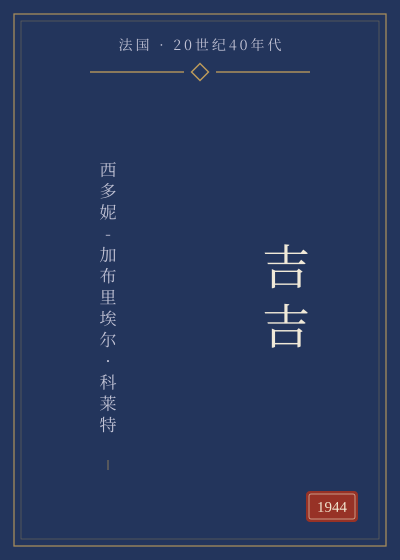
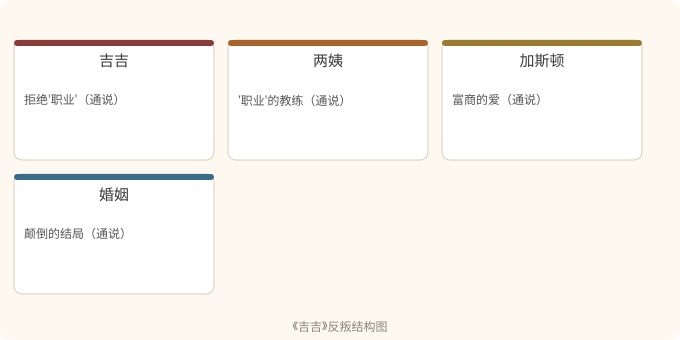

吉吉
一、基本信息
| 作者 | 西多妮-加布里埃尔·科莱特 |
|---|---|
| 成书/出版 | 1944年（Britannica B404：Gigi (1944)——改编舞台与电影——1958年音乐电影） Colette — Encyclopaedia Britannica（百科全书） |
| 国别/地区 | 法国 |
| 时代 | 近代 · 20世纪40年代 |
| 体裁 | 中篇小说 |
| 语言 | 法语 |

《吉吉》反叛结构图（主题·结构图）
二、创作背景
Britannica（B404）：Gigi——girl raised by two elderly sisters to become a courtesan（被两老姐妹养大成'交际花'的女孩）——改编舞台与电影——1958年音乐电影（Maurice Chevalier/Louis Jourdan/Leslie Caron）。
Britannica（B404）：科莱特——'the annalist of female existence'——'the pains and pleasures of love'。
题材（通说待核）：吉吉拒绝'职业'——'我要嫁给他'的颠倒。
三、内容脉络
（通说待核——B404未载剧情）吉吉与加斯顿：'规矩'的反叛。
（通说待核）外婆阿莉西娅与姨们的'职业'训练。
四、主要人物表
| 人物 | 身份 | 说明 |
|---|---|---|
| 吉吉 | 少女 | （B404 书名人物） |
| 加斯顿 | 富商 | （通说待核） |
五、主题与艺术特点
- '交际花'制度与拒绝（通说待核）。
- '女性存在的编年史'（B404：the annalist of female existence）。
- 婚姻 vs '职业'（通说待核）。
六、影响与评论
- Britannica：1958年音乐电影（B404）。
Colette — Encyclopaedia Britannica（百科全书） - Britannica：'an outstanding French writer of the first half of the 20th century'（B404）。
Colette — Encyclopaedia Britannica（百科全书）
七、阅读建议
难点
- '美好年代'巴黎背景（通说待核）。
- '轻'语体的反抗。
- 《吉吉》中译本（人民文学等——通说待核）。
- 法文原版。
科莱特晚期首选；与《谢利》对读。
八、待核实
- 吉吉/加斯顿人名核对（通说）。
- 1944年出版细节待核。
- 1958年音乐电影核对（B404已载主演）。